Q: 这里是什么地方？
A: 这是一个简单的解决校园网各项疑难杂症的小去路， 包含有关于校园网的各项简介和问题解答。
Q: 为什么我会来到这里？
A: 由于你询问的问题已经有了固定的解决方案或经验公式， 你被引导至此通过寻找获取解决方法。
Q: 我应该怎么做？
A: 请首先从导航寻找你的问题类型，点击后查找详细问题。
A: 学校校园网的使用需要学生对其账户开户后，认证才能使用校园网服务。开户费为 30元 ，使用费为 10￥/月 。
A: ① 使用电脑/手机访问网上营业厅；② 使用“集大通”客户端-“应用中心”-“网费充值”。
A: 使用。 有网络接口的电脑 请下载 锐捷客户端 认证。
移动设备&没有网络接口的电脑 请使用 无线路由器 认证。
下载 Windows 锐捷客户端，输入 集大通行证 账号和密码进行认证。
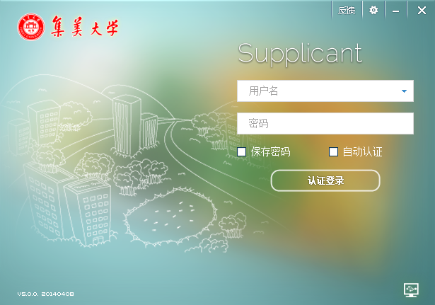 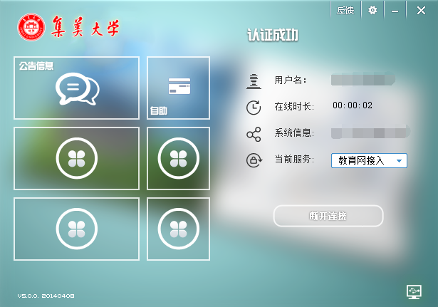在已经 绑定宽带 的情况下，点击当前服务选择框，可以切换至账户绑定的宽带。
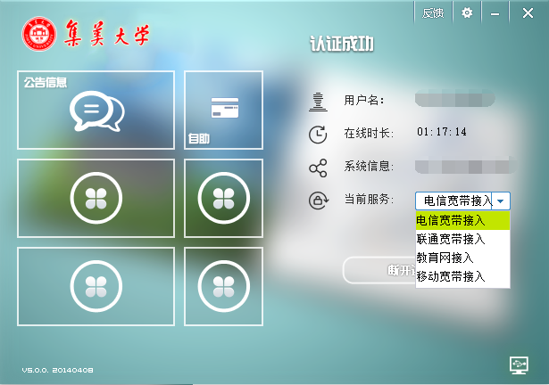认证时如果遇到错误信息请查找错误信息。
下载 Mac OS X 锐捷客户端，提供本机登录用户账号和密码后进入应用，输入 集大通行证 账号和密码进行认证。
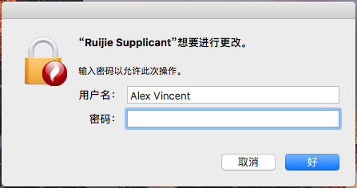 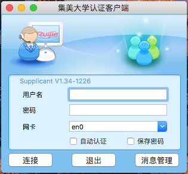 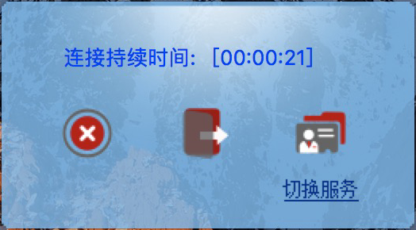在已经 绑定宽带 的情况下，点击当前服务选择框，可以切换至账户绑定的宽带。
认证时如果遇到错误信息请查找错误信息。
在校内寻找名称为“ jmu ”的WiFi接入点，连接并在弹出的窗口中认证。
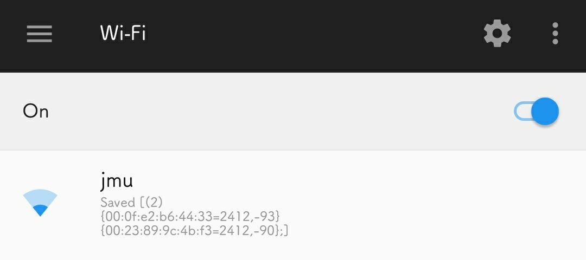 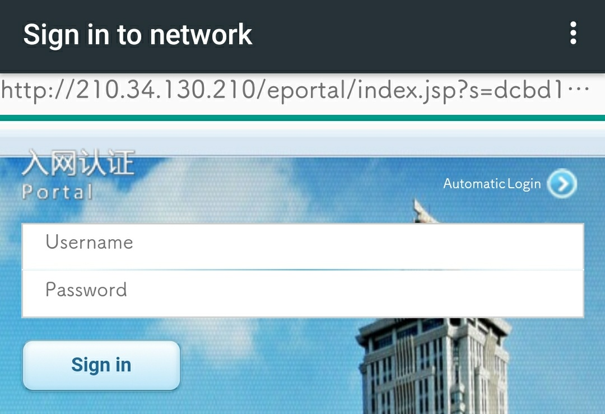 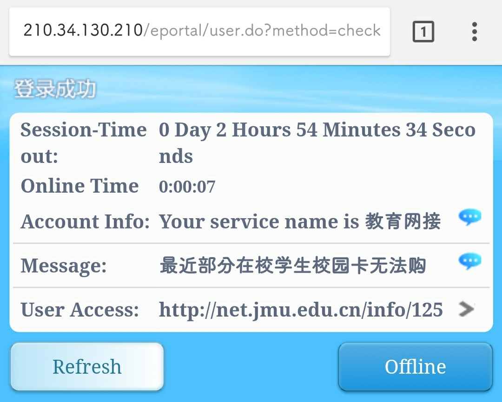使用路由器WiFi接入点，连接并在弹出的窗口中认证。在已经 绑定宽带 的情况下，输入“ @(电信/联通/移动)宽带接入 ”以获得宽带加速
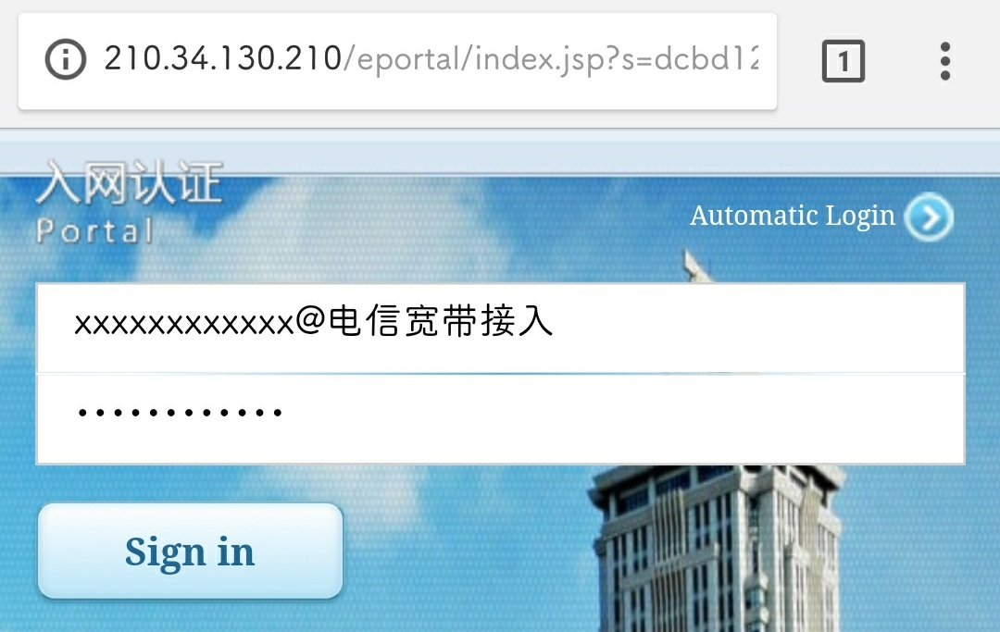 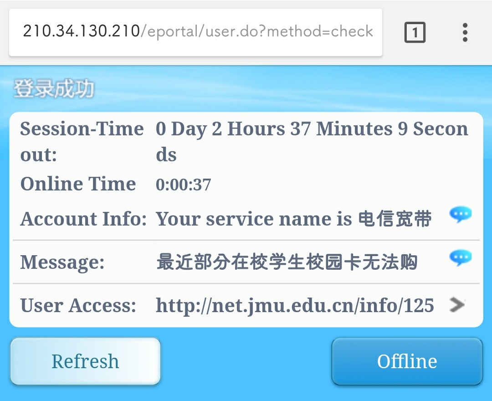A: 由于认证方式限制，路由器使用方法与常用方法较为不同。需要关闭LAN口的DHCP，将路由器作为交换机使用，用户在连接路由器后，需要认证自己的校园网账户，方可上网。
A: 以TP-Link某型号路由器为示例，以下为设置过程。
① 连接路由器，登录管理界面，地址贴在路由器背后，如"http://tplogin.cn/"。点击路由设置。
点击无线设置，设置路由器发射的无线信号的名称和密码。
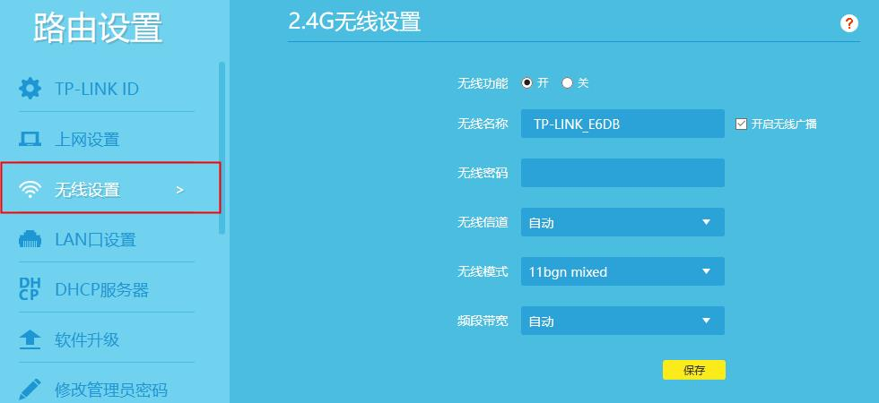点击DHCP服务器，将DHCP服务器关闭。
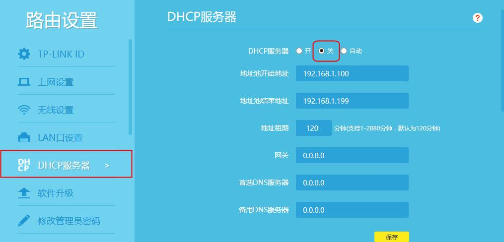将路由器重启，把接入网线面板的网线另一端接在路由器的LAN口。
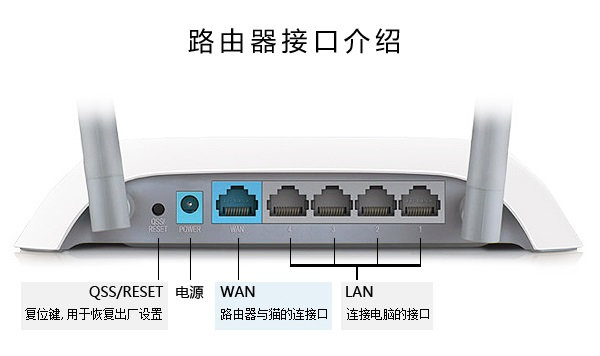A: 宽带的广泛定义是电子线路包含或者是能够同时处理较宽的频率范围，通俗说法为数据发送多少的范围。
A: 校园网只提供基础网络接入和比较基础的网速 (0-400kb/s±)，此时叠加宽带后能获得更高的网速，比如2.8MB/s (20M)、6.25MB/s (50M)、12.5MB/s (100M)。
A: 三大运营商 (电信/联通/移动)均有学生套餐包含宽带，详情请电联运营商客服或访问运营商网站。
A: 与传统宽带PPPoE拨号不同，在校内使用宽带服务均为vpn接入，需绑定在校园网账户上使用，而不能直接接入和拨号。
A: 获取宽带密码才可绑定宽带。请电联运营商人工服务获取宽带密码，一般为6位纯数字。
A: 使用电脑在已经接入校园网的情况下，访问网上营业厅，点击上方“账号管理”-“宽带绑定”。
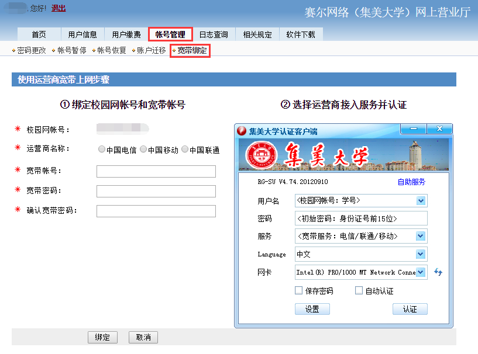输入宽带账号 (一般为手机号)、宽带密码、确认宽带密码，点击绑定按钮完成绑定。
绑定时如果遇到错误信息请查找错误信息。
情况1：未开户情况下使用网络。
解决方法：请开通校园网账户。
情况2：在教学区域使用宽带服务。
解决方法：教学区域仅允许使用教育网，请将服务切换为“教育网接入”。
解释：当前在线连接数已达到最大限制。
解决方法：此情况多出现在断电恢复后重新认证时，请检查宽带是否已被占用，若无请联系运营商人工客服解决。
解释：未符合管道绑定条件。
解决方法：请联系运营商人工客服解决。
解释：密码不正确。
解决方法：请使用正确的宽带密码绑定宽带。
解释：用户名或服务不存在。
解决方法：请检查是否输入了正确的宽带账号，以及该账号是否开通了宽带业务。
解释：服务不可用。
解决方法：请检查宽带账号所属的手机卡是否正常使用、是否停机、是否欠费。
如果你有更多的关于校园网问题和以上步骤的建议，可以通过邮箱联系我。
邮箱：alex@jmu.edu.cn